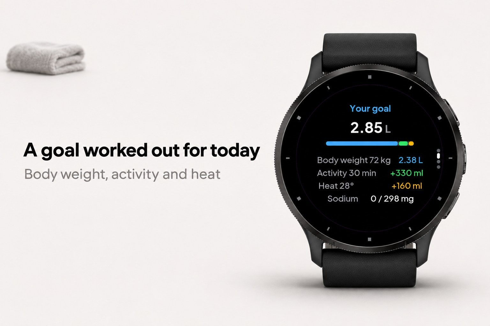
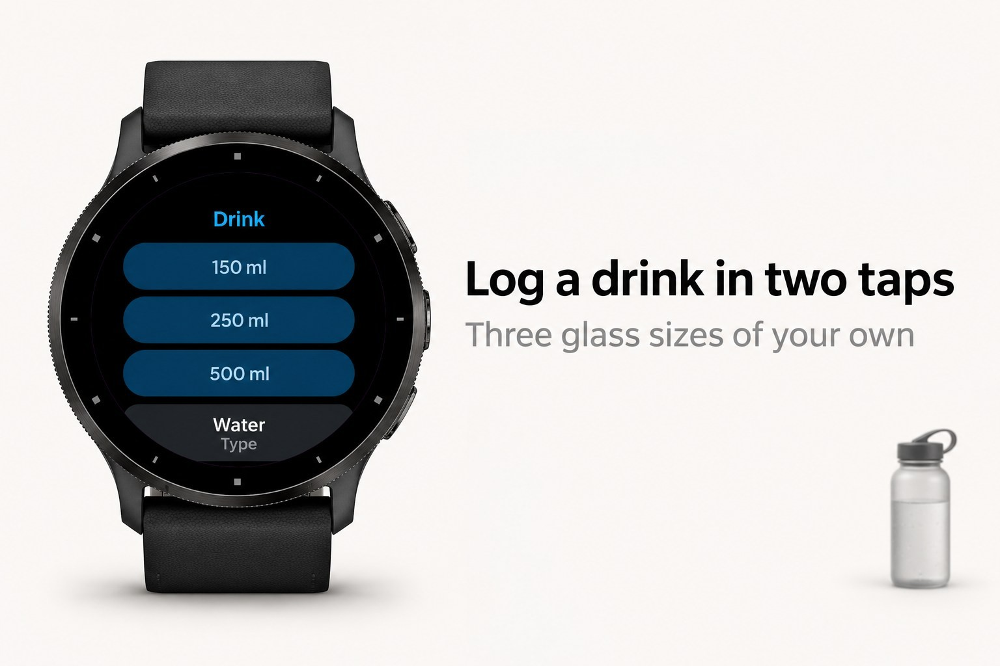
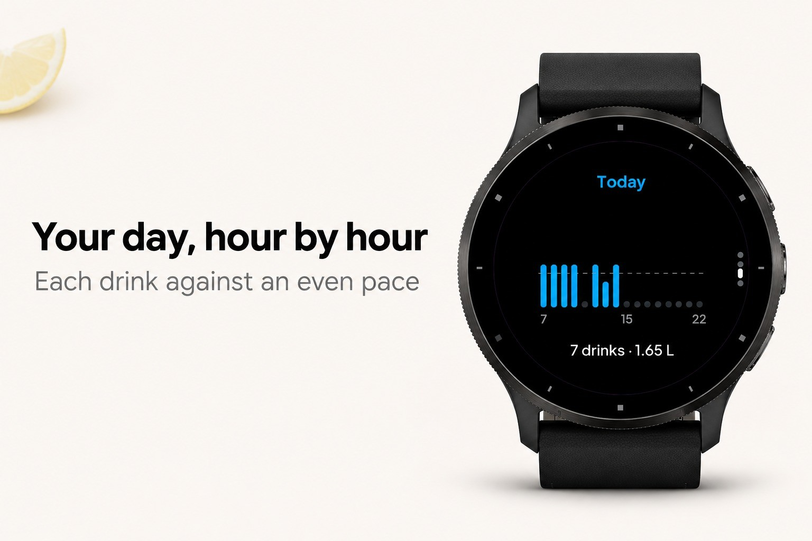
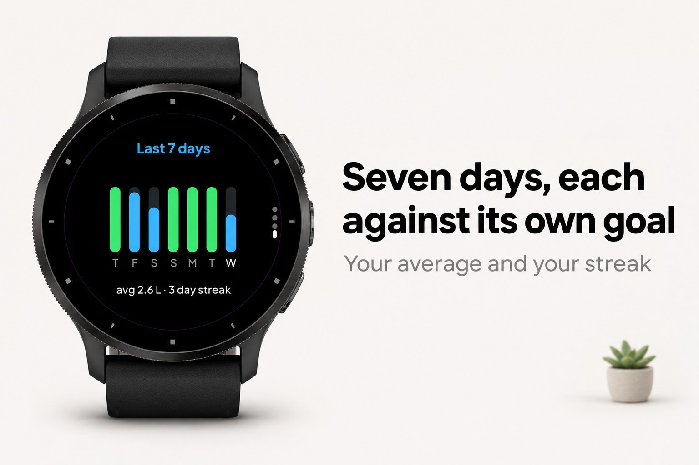

HydroSmart
Water tracker with a daily goal worked out from weight, activity and heat.
Submitted to Garmin and waiting for review. The store link appears here once it is approved.





HydroSmart is a water tracker that works out how much you need today and tells you whether you are on pace.
Your goal, every day
Most trackers ask you to pick a number once. HydroSmart builds the goal from your body weight, adds what you sweated out during today's active minutes and adds more when the weather is hot and humid. A second page shows exactly how the number is built. Prefer a fixed amount? Switch it to one.
On pace or behind
The goal is spread from the moment you wake up until 90 minutes before bedtime, so the last glass is not the one that wakes you at night. The ring fills as you drink, a white mark on it shows where you should be by now, and one line says what to do: "Next: 250 ml by 15:30".
Log in two taps
Three glass sizes of your own, any other amount with - and +, and nine kinds of drink. Undo the last one or delete any drink from today's list.
Reminders that stay quiet
No hourly beeping. HydroSmart only nudges you when you are awake, clearly behind the pace, and have not had a drink or a nudge in the interval you chose.
Sweat and sodium
Set your sweat rate and how salty your sweat is. After a long session the app compares the sodium you lost with what sports drinks, electrolyte mixes or salt capsules brought in, and suggests electrolytes when you fall behind. It also warns when you drink more than a litre in an hour.
The rest
- Day view: every hour as a bar, with the even pace as a line.
- Week view: seven days against each day's own goal, your average and your streak.
- Glance: amount, goal and pace without opening the app.
- Millilitres or fluid ounces.
- 16 languages. Everything stays on the watch: no account, no phone app.
HydroSmart gives general hydration guidance and is not medical advice. If you have a heart or kidney condition, follow your doctor's fluid limits.